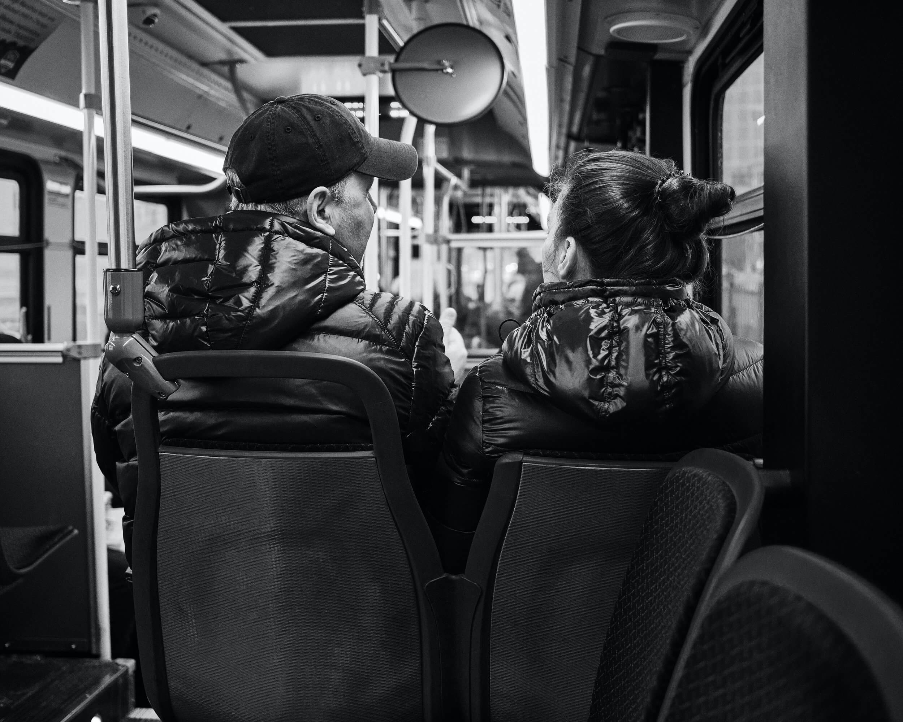
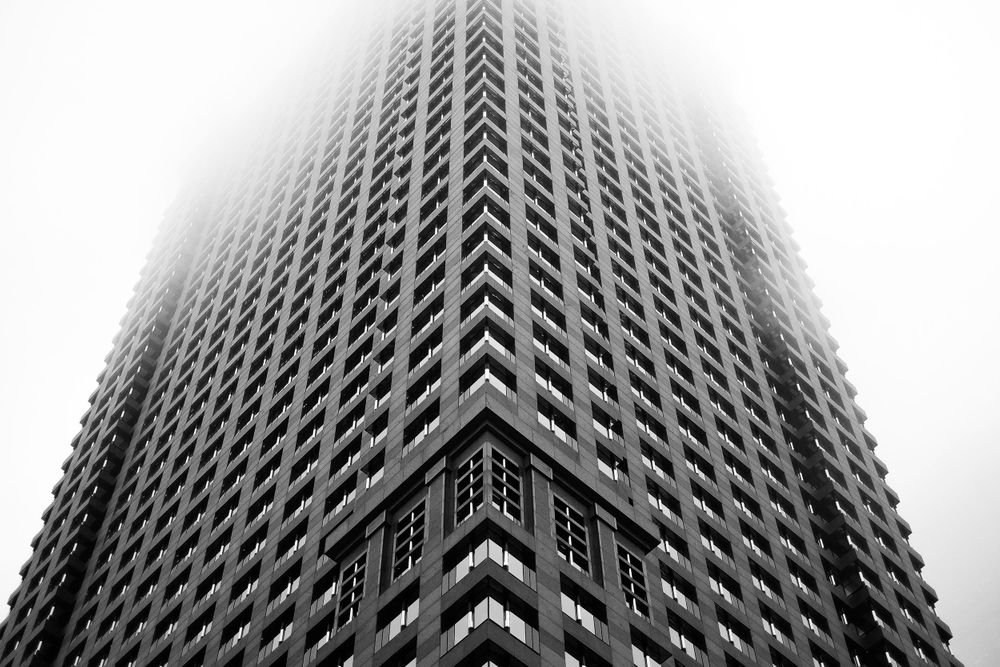
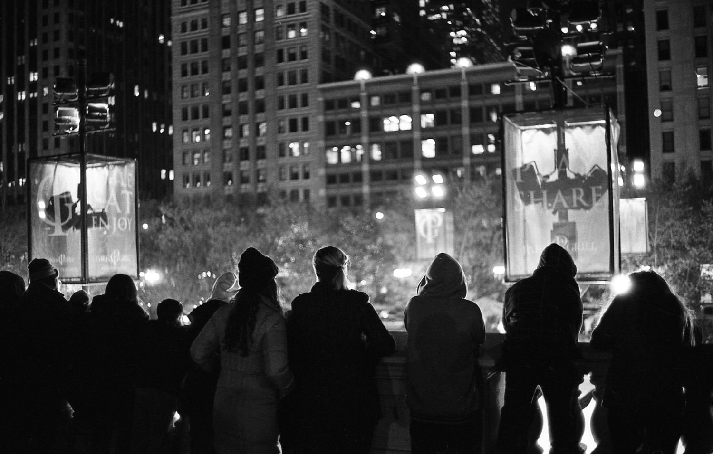
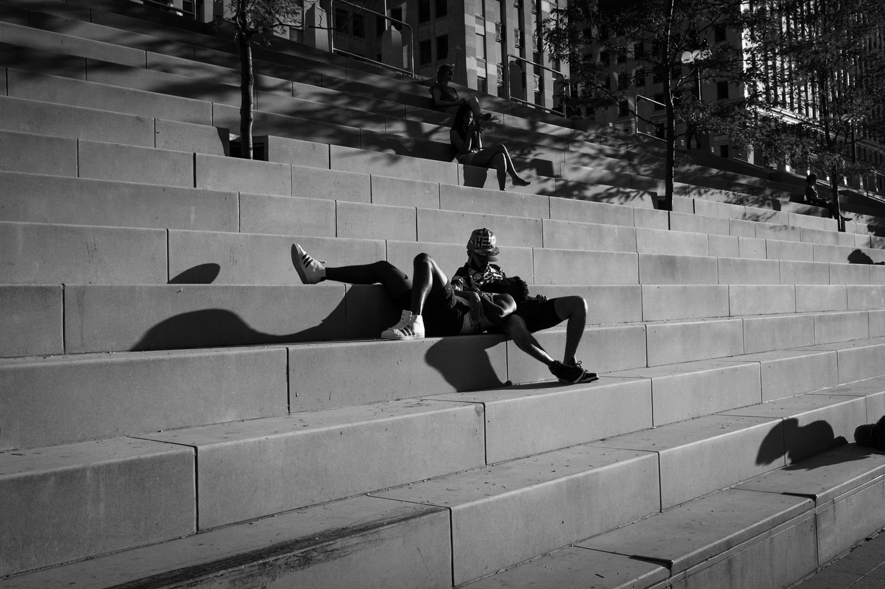

I'm Ian Battaglia, and I think of myself sort of as like a multidisciplinary artist, maybe – and really the way that manifests is in writing and photography, primarily, as well as a little bit of filmmaking.
Across a wide variety of mediums, I try to utilize my range of interests to explore what I think of as similar themes; which are just like, you know, the joy of everyday living, the wonder of like the specific everyday moments, and exploring like, alternative ways to live and interact with the world around us.
You know, I don't have a formal background like, an academic background in writing. My academic background is in filmmaking, and so I think I really got into criticism in an attempt to sort of like force myself to exert that critical view on the works I was consuming and help me – help me like break down books, in an attempt to help me write.
Obviously, they're like, super different mediums, but I think the way they cross over the most for me is – I think I try to capture a lot of the same sorts of moments across both videos, writing and photography.
A lot of my photography work is like street photography, where I'm just walking around downtown Chicago, looking for a moment that I think is somehow special, or interesting, or conveys some sort of like joy about the moment, or about life in general. And I think those are the same sort of things I try to capture in writing.
I also – I think my writing also, you know, again, I don't think is unique to me, but I think my writing really is sensory based. I got into creative writing through screenwriting, because I went to film school, and because of that I, you know – when you're doing screenwriting, the best way to do it is to write only what can be filmed, right? You can't just say, "Bill looks angry", right? What does that mean, how do you film that?
You have to write, you know, "Bill's got a fist in his hand and he's" you know, "throbbing his brow" or something like that, so a lot of those tendencies carried over to my fiction writing.
And so the way I write prose is a lot like that, a lot of like sensory inputs. I don't think "show don't tell" is like the end-all-be-all, but it's something I'm really aware of, all the time. It's just like writing, you know, how does it feel, how does it smell, how does it sound? Rather than just explaining what I want to convey.
I choose what books to review in a very similar to the way I choose the books I want to read. I look at the catalogs of stuff that's coming out in the next couple of months (…) and now I'm at the point where publicists and people who work for publishers will just send me books, or send me an email and say, "Hey Ian, I think you might like this book", and they'll just send it for me to consider, so yeah – that's sort of how I choose books.
And then I like to think that the way I read a book to review it is really similar to the way I read a book just normally, you know – I've tried to incorporate that critical eye across all of my reading, rather than a specific mode limited to reviewing; and I think partially just from being a writer too, there are things that just call out to you, either as something really beautiful, or as flawed in some way.
I used to make like, comprehensive notes, while I was reading; but now usually what I do is I just "dog ear" pages while I'm reading them, just mark them as something I want to come back to, and then when I sit down to write a review, I'll just flip through the book and go to these pages I've dog ear’ed. Usually right away I can tell what it is I want to talk about there.
And if I can’t, I [just] decide it wasn't important. Usually, through speaking it out loud to my girlfriend we'll get to a point where I can like write a draft that's cohesive on what I wanted to [say] about the book.
I think there's sort of like a big misunderstanding of the way that critics work, you know? It feels like every week, there's some new artist on Twitter who's yelling about "how bad critics are and how they didn't get it”. I too have faced a little of just, saying you know, I didn't like their favourite book, or something like that. To me, that's not really what it's about.
A critic is providing their own perspective on a work, and I think in the best case [possible], hopefully providing context around that work, contextualizing that piece within, you know, a greater artistic sphere.
You know, have I listened to as many records as Anthony Fantano? No, and his knowledge is very useful in providing that framework. Like "okay, this album is sort of like this, and it's playing off this, and its a response to this”, and you know, that sort of information – it’s just not accessible to the average lay listener like me, because I just don't have that encyclopedic knowledge.
I also think part of the problem too is that people have a hard time drawing the difference between a review and a piece of criticism – and the lines are really blurry, for sure, so I don't blame people for this.
But I think a piece of criticism is like a work in its own right, that's trying to contextualize and provide some sort of nuance around a work; whereas a review is like, you go on Google Maps, and you're trying to find if this restaurant is good or not. It's just purely an opinion-based thing.
And so I think people aren't really sure about the distinction there, and how those two different [categories] interface with one another. And for sure there are times where they cross over, and so you know, it can be hard to tell, but I think real criticism provides this layer of knowledge that an average reader won't get, and it is super helpful.
If you're looking for a review to confirm that the thing that you like is quote-unquote good or not, I think you already missed the point.
It's such a tough line, you know, like – our perception of a work is influenced by so many different things, just like you said. And of course, there's a lot of times where there's been, a work, a book, a movie, a record or something, that we as a society have come to appreciate later on, and you know, it was poorly received [initially], right?
And I think there can be kind of a snowball effect too – with like reviews, where just, speaking from my experience in book reviews, you know, when you get sent a book by a publisher, the things they say to you are like "this is the most amazing book that's ever been written", and "it's going to redefine…”, you know, they state it like the second Bible or something like that, right.
And hype too, I mean, there are – it seems sort of weird to say it, but there are books that are like hyped, and writers that are hyped, and so – when they come out with their new book, you know, you can see [that] a lot of critics will just like fall in line, and write like, a really positive review, right? When maybe the book isn't even that good.
But they're just like, too close to it in the moment, or something like that, you know – I think [works] always rise to what you expect of them in a way, and so if you go into something and you color your experience [beforehand], like "oh, this is going to be terrible", or whatever, it's really hard to have a good time, like, to find something enjoyable, if you've already decided that you think it's going to be bad.
Yeah, that was a recent title change for me [at the time of this interview], just sort of trying to acknowledge that I have a really wide base of interests and skill-sets. You know, I certainly don't claim to be an expert in many of these fields, but I have always prided myself on having a really wide range of interests, and being more of a generalist than a specialist.
So you know – I know just enough to get by in filmmaking, writing, photography, podcasting, web design, graphic design, you know, a lot of different fields; and even in the fields where I don't have enough knowledge, I feel like I have friends who I can consult (laughs), who do.
And a lot of that is through like the Merveilles collective, and things like that, and so that was sort of meant to encompass that, or just showcase the wide range of things I've helped publications with, or advised on, just in terms of different directions, and things like that.
Yeah I'm always going back and forth, with Todd, who’s [my] editor-in-chief [at the time of this interview], and a really close friend of mine, just trying to figure out what the next big thing is, and looking at publications around us, you know.
State media is really fraught right now, so we're always just trying to figure out new partnerships we can make, and new collaborations, and different mediums, and technologies we can get into, you know. We recently got a podcast, we updated the website, we've got a few big partnerships on the way, so that sort of thing is really what it was meant to encompass.
I feel it all the time, just like – it's impossible not to look at the world around [us], and just feel like shouldn't I be doing more about this you know? (laughs). Like, "what can I do to help", you know?
Every single week I think about dropping out of society, and like, I don't know, going to fight forest fires on the East Coast, or plant trees or, you know, something, you know, find some sort of connection.
Even in times of turmoil, art is extremely valuable (...) as the means of capturing and expressing the joy of living – and that doesn't become less valuable just because times are tough.
I think it's the impetus of artists and creators, regardless of what field you're in, is to find ways to make work that's meaningful, you know. And what “meaningful” means to you, is not necessarily what it means to everybody.
But yeah, I think that you're neglecting your duty if you don't acknowledge you know, what's going on around you, right? That’s a huge part of it to me – and so you know, if it's helping to address climate change, if it's helping to address political issues, that's one of the things I want to accomplish in my work. Especially in my writing, and a little bit in my photography as well, just showing some sort of an alternate way to live, right?
I think a lot of people are just sort of stuck in this mindset, that this world of capitalism puts you in, you know like, waking up and doing your job for 50 years, and then dying before retirement or whatever, while the rich get richer, is the only way to be. But I don't think that's the case – I think there is a better relationship we can have with nature, with society, you know, a more equitable, charitable relationship.
So one of the things I want to do is just make work that shows people that there's another way to be – and I think just having something that shows, you know, offers a suggestion for how to live is really valuable, especially in times like this, where it feels at times like, there is no alternative, and we're just you know, headed downwards.
Yeah I just think that, you know, this idea that the person who created the work, the filmmaker or the writer, is the final authority on their own work is false – I don't think that's the way it is.
I think a lot of times you're too close to the work [as the author] or it [might be] expressing something different from what you thought it was, so I'm not too interested in what people, you know – if you go to like a film screening with the director there, people always want to ask like "what does it mean, what's it about”, right?
But that's not too important to me- I don't really care about that, because I think [that] what the person who made it thought it was about, it's not necessarily what it is about, or what an audience member is going to bring to it with their own unique experiences, and the different work that they've seen, and their life experience, is just as valuable to me as what the author or filmmaker puts into it, or their intent.
(...) I've always really longed for that sort of community, interfacing with different people who share aesthetic sensibilities, who share ideological sensibilities, and that ability to communicate, interact with such a wide group of multidisciplinary people, I think is extremely valuable.
And especially now, when so much of life is online, it's as valuable as it's ever been, you know – just to have these people to connect with. I think some of my absolute closest friends I've made through this connection you know, and through the Merveilles collective. Yeah I think I have more friends online than I do in real life (laughs).
Obviously I think it's sort of led by this technologically-[oriented] people, but I think I've been really fortunate that it's very welcoming, even to people like me whose technical knowledge is very very limited, who focus more on the creatives, or the aesthetics, you know.
But I don't think we're alone in that, both you and I, because there are a lot of people like us who are not so technologically minded you know, but still find a place and can interact with this community in a way that is really positive, and you know just seeing people who have specific skill sets, and take such care and pride in their craft – I think it's been super beneficial to me.
And also just observing the work of [Devine and Rekka] you know, they showed me that it's okay to be a generalist you know, and it's okay to find a new way to live, and I can't thank them enough for that, you know – and that's something I really would love to convey to other people as well: you can go buy a sailboat, or a sheep farm or something, you know, there are other ways of doing it, and you don't have to just become the world's "best spreadsheet expert", or something like that or, you know, "best accountant" or whatever.
Not that there's anything wrong with that, you know – but it's okay to have a wide range of interests, and a wide range of abilities, and those will all find ways to feed into one another and help you produce the work that you need to be producing.
I hope I look back at this and see if I achieved all my goals (laughs). I really would like to be widely read, you know, I don't think I necessarily want to be in the same sort of "hype" publishing sphere, I don't really like that aspect of it, but I would really like this sort of freedom to write a book, and have people regard it, you know, without having to like fight tooth-and-nail just to get it in front of people (laughs).
There's a big sort of freedom you get with a sort of, not literary celebrity, but like literary acclaim at least, all the teaching positions and things like that. For me, I’d like to finish my manuscript and publish a novel, basically, as soon as I'm able to. Of course the pandemic has thrown that for a loop, but I'm still chipping away at it and hope to be done with it soon.
I'd also really like to just continue to explore all these different fields that I'm interested in, and finding the ways they overlap.
I think for me what I really want is just the space or the environment to learn more, you know – I love learning, and I want to be able to continue to produce the work and continue to follow my interests wherever they take me, and find the ways [in which] they interact with each other, and I think that produces the best work for me, so it's sort of a synergistic process, and then finally just finding what I think of as a better way to interact with nature and the world around me.
I am very much like a city-living [person], but I want to find a way to shake my environment a bit better, and reconsider my ecological toll, and the relationship I have with the world around me- I don't think that's going to be so extreme as purchasing a sailboat to live on (laughs) but something similar, I'd like to travel more, experience a broader range of cultures while working on learning as much as possible, and hopefully having that feed into the work.
You know… that’s a good question, I – knowing me I think I would be sad of course. I wish I wasn't like this, but I do think I reach for recognition and approval from others. So I think if I released something that was like universally hated, I'd be pretty sad about it (laughs).
But I think hopefully I would come to terms with it and, you know, at the end of the day I can only produce the work that I'm capable of producing, right? And I'm always going to write the best I can, and make the best photos I can, and if the work I produce isn't received well, you know, that's fine.
Maybe it's not that good, or maybe it's just not finding its audience, you know, and even if people don't like the work, you know, even if critics don't like the work, there may be people out there who do, you know. I'm just thinking about [that] a lot of the work that I love that it's necessarily well-received, you know?
A lot of work that is well received is terrible, right? So I think just knowing that it's not the end-all-be-all you know, criticism and review, I find and useful obviously, but trying not to put too much stock in them, and just making sure the work can get to where it needs to go, yeah.